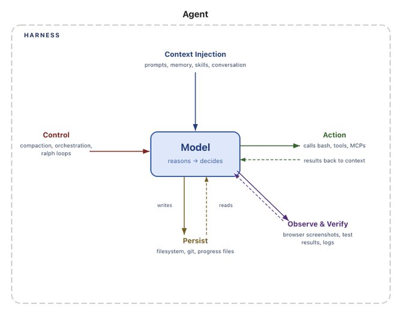
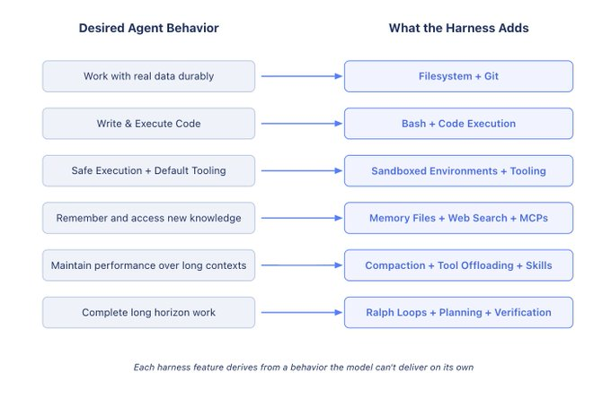
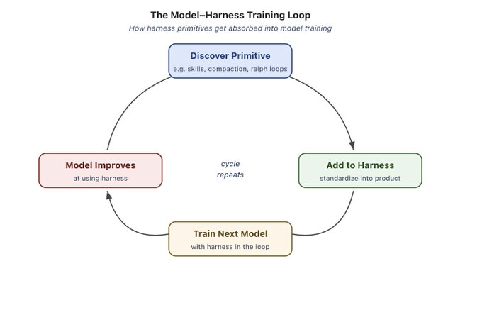

原文：The Anatomy of an Agent Harness 来源：LangChain Blog | 2026-03-10 作者：Vivek Trivedy
· · ·
· · ·
TL;DR： Agent = Model + Harness。Harness engineering 是围绕模型构建系统、把模型变成工作引擎的方法论。模型提供智能，harness 让这种智能变得有用。这篇文章定义了 harness 是什么，并推导出今天和未来的 agent 需要哪些核心组件。
· · ·
Agent = Model + Harness。
如果你不是模型，你就是 harness。
Harness 是除了模型本身之外的所有代码、配置和执行逻辑。一个裸模型不是 agent，但当 harness 赋予它状态、工具执行、反馈循环和可执行约束时，它就变成了 agent。
具体来说，harness 包括：
在模型和 harness 之间划分 agent 系统的边界有很多混乱的方式。但作者认为这是最干净的定义，因为它迫使我们思考围绕模型智能来设计系统。
这篇文章的其余部分会逐一走过核心 harness 组件，从模型这个核心原语出发，倒推出每个组件为什么存在。

· · ·
有些事情我们希望 agent 做到，但模型开箱即用做不到。这就是 harness 存在的意义。
模型（大部分）接收文本、图像、音频、视频，输出文本。就这样。开箱即用它们不能：
这些都是 harness 层面的功能。LLM 的结构要求某种包裹它们的机制来做有用的工作。
比如，要实现"聊天"这种产品 UX，我们把模型包在一个 while 循环里来追踪之前的消息并追加新的用户消息。每个读者都已经用过这种 harness。核心思路是：把期望的 agent 行为转化为 harness 中的实际功能。
· · ·
Harness engineering 帮助人类注入有用的先验来引导 agent 行为。随着模型越来越强，harness 被用来精确地扩展和修正模型，让它们完成以前不可能的任务。
这篇文章不会列举所有 harness 功能。目标是从"帮助模型做有用工作"这个起点出发，推导出一组功能。我们会遵循这样的模式：
我们想要的行为（或想修复的行为）→ 帮助模型实现这一点的 Harness 设计。

· · ·
我们希望 agent 有持久存储，能与真实数据交互、卸载不适合放在上下文中的信息、跨 session 持久化工作。
模型只能直接操作上下文窗口内的知识。在文件系统之前，用户必须复制粘贴内容给模型——这种 UX 很笨拙，对自主 agent 不可行。世界已经在用文件系统做工作，模型自然在数十亿 token 的文件系统使用数据上训练过。自然的解决方案是：
Harness 自带文件系统抽象和文件操作工具。
文件系统可以说是最基础的 harness 原语，因为它解锁了：
Git 为文件系统添加版本控制，agent 可以追踪工作、回滚错误、分支实验。后面我们还会回到文件系统，因为它是其他功能所需的关键 harness 原语。
· · ·
我们希望 agent 自主解决问题，无需人类为每个可能的操作预先设计工具。
今天主要的 agent 执行模式是 ReAct 循环：模型推理、通过 tool call 执行动作、观察结果、在 while 循环中重复。但 harness 只能执行它有逻辑的工具。与其强迫用户为每个可能的操作构建工具，更好的方案是给 agent 一个通用工具——bash。
Harness 自带 bash 工具，让模型通过编写和执行代码来自主解决问题。
Bash + 代码执行是向给模型一台电脑迈出的一大步，让它自主搞定剩下的事。模型可以通过代码即时设计自己的工具，而非被限制在固定的预配置工具集中。
Harness 仍然会附带其他工具，但代码执行已经成为自主问题解决的默认通用策略。
· · ·
Agent 需要一个有正确默认值的环境，可以安全地行动、观察结果、取得进展。
我们已经给了模型存储和执行代码的能力，但这些都需要在某个地方发生。在本地运行 agent 生成的代码有风险，单一本地环境无法扩展到大型 agent 工作负载。
沙箱给 agent 安全的操作环境。 不在本地执行，harness 可以连接到沙箱来运行代码、检查文件、安装依赖、完成任务。这创造了安全、隔离的代码执行。为了更高安全性，harness 可以允许列表命令和强制网络隔离。沙箱还解锁了规模——环境可以按需创建、扇出到多个任务、完成后销毁。
好的环境配备好的默认工具。 Harness 负责配置工具让 agent 能做有用的工作。这包括预装语言运行时和包、git 和测试的 CLI、用于 web 交互和验证的浏览器。
浏览器、日志、截图和测试运行器给 agent 一种观察和分析工作的方式。这帮助它们创建自我验证循环——写应用代码、运行测试、检查日志、修复错误。
模型不会开箱即用地配置自己的执行环境。决定 agent 在哪里运行、有哪些工具可用、能访问什么、如何验证工作——这些都是 harness 层面的设计决策。
· · ·
Agent 应该记住它们见过的东西，并访问训练时不存在的信息。
模型除了权重和当前上下文中的内容外没有额外知识。不能编辑模型权重的情况下，"添加知识"的唯一方式是通过上下文注入（context injection）。
对于记忆，文件系统再次是核心原语。Harness 支持像 AGENTS.md 这样的记忆文件标准，在 agent 启动时注入上下文。Agent 添加和编辑这个文件时，harness 将更新后的文件加载到上下文中。这是一种持续学习（continual learning）形式——agent 从一个 session 持久存储知识，并将该知识注入未来 session。
知识截止日期意味着模型无法直接访问新数据（如更新的库版本），除非用户直接提供。对于实时知识，Web Search 和 MCP 工具（如 Context7）帮助 agent 访问超出知识截止日期的信息——新库版本或训练停止后才出现的当前数据。
Web Search 和查询最新上下文的工具是值得内置到 harness 中的有用原语。
· · ·
Agent 性能不应在工作过程中退化。
Context Rot 描述了模型随着上下文窗口填满而在推理和完成任务上变差的现象。上下文是珍贵且稀缺的资源，harness 需要策略来管理它。
今天的 harness 在很大程度上是好的上下文工程的交付机制。
Compaction（压缩） 解决上下文窗口接近填满时该怎么办的问题。没有 compaction，对话超出上下文窗口会怎样？一种选项是 API 报错——这不好。Harness 必须对这种情况使用某种策略。所以 compaction 智能地卸载和摘要现有上下文窗口，让 agent 可以继续工作。
Tool call offloading（工具调用卸载） 帮助减少大型工具输出对上下文窗口的噪声影响——这些输出杂乱地占据上下文窗口却不提供有用信息。Harness 保留超过阈值 token 数的工具输出的头尾 token，将完整输出卸载到文件系统，模型需要时可以访问。
Skills（技能） 解决 agent 启动时加载太多工具或 MCP 服务器到上下文中导致性能退化的问题——agent 还没开始工作就已经退化了。Skills 是 harness 层面的原语，通过渐进式披露（progressive disclosure） 解决这个问题。模型没有选择在启动时加载 Skill 前置信息到上下文中，但 harness 可以支持这一点来保护模型免受 context rot。
· · ·
我们希望 agent 自主、正确地完成复杂工作，跨越长时间范围。
自主软件创建是 coding agent 的圣杯。但今天的模型存在过早停止、复杂问题分解困难、跨多个上下文窗口工作时不连贯等问题。好的 harness 必须围绕所有这些问题来设计。
这是早期 harness 原语开始复合的地方。长时间工作需要持久状态、规划、观察和验证，才能跨多个上下文窗口持续工作。
文件系统和 git 用于跨 session 追踪工作。 Agent 在长任务中产出数百万 token，文件系统持久捕获工作以追踪进展。添加 git 让新 agent 快速了解最新工作和项目历史。多个 agent 协作时，文件系统也充当共享的工作账本。
Ralph Loop 用于继续工作。 Ralph Loop 是一种 harness 模式：通过 hook 拦截模型的退出尝试，在干净的上下文窗口中重新注入原始 prompt，强制 agent 继续工作直到完成目标。文件系统使这成为可能——每次迭代以新鲜上下文开始但从上一次迭代读取状态。
规划和自我验证保持在正轨。 规划是模型将目标分解为一系列步骤。Harness 通过好的 prompting 和注入如何使用文件系统中计划文件的提醒来支持这一点。完成每步后，agent 通过自我验证检查正确性。Harness 中的 hook 可以运行预定义测试套件，失败时带着错误消息循环回模型；或者模型可以被提示独立地自我评估代码。验证将解决方案锚定在测试上，并为自我改进创造反馈信号。
· · ·
今天的 agent 产品（如 Claude Code 和 Codex）是在模型和 harness 在循环中的情况下后训练的。这帮助模型改进 harness 设计者认为它们应该原生擅长的动作——文件系统操作、bash 执行、规划、用 subagent 并行化工作。
这创造了一个反馈循环：有用的原语被发现、添加到 harness、然后在训练下一代模型时使用。随着这个循环重复，模型在它们被训练的 harness 中变得更强。
但这种共同进化对泛化有有趣的副作用。它表现为改变工具逻辑会导致更差的模型性能。一个好例子是 Codex-5.3 prompting guide 中描述的 apply_patch 工具逻辑。一个真正智能的模型在切换 patch 方法时应该没什么困难，但在 harness 循环中训练创造了这种过拟合。
但这不意味着最好的 harness 就是模型后训练时用的那个。 Terminal Bench 2.0 排行榜是好例子：Opus 4.6 在 Claude Code 中的得分远低于在其他 harness 中的得分。LangChain 在之前的博客中展示了仅通过改变 harness 就将 coding agent 从 Top 30 提升到 Top 5。针对你的任务优化 harness，还有很大的提升空间。

· · ·
随着模型更强，今天 harness 中的一些东西会被模型吸收。模型会原生地更擅长规划、自我验证和长时间连贯性，因此需要更少的上下文注入。
这暗示 harness 随时间应该变得不那么重要。但就像 prompt engineering 今天仍然有价值一样，harness engineering 可能会继续对构建好的 agent 有用。
确实，今天的 harness 在修补模型缺陷，但它们也围绕模型智能工程化系统使其更有效。配置良好的环境、正确的工具、持久状态和验证循环让任何模型更高效——无论其基础智能如何。
Harness engineering 是一个非常活跃的研究领域，LangChain 用它来改进 harness 构建库 deepagents。以下是他们今天在探索的几个开放且有趣的问题：
这篇博客是一个定义 harness 是什么、以及它如何被我们希望模型做的工作所塑造的练习。
模型包含智能，harness 是让这种智能变得有用的系统。